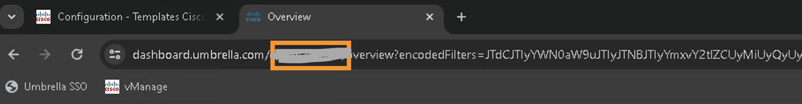
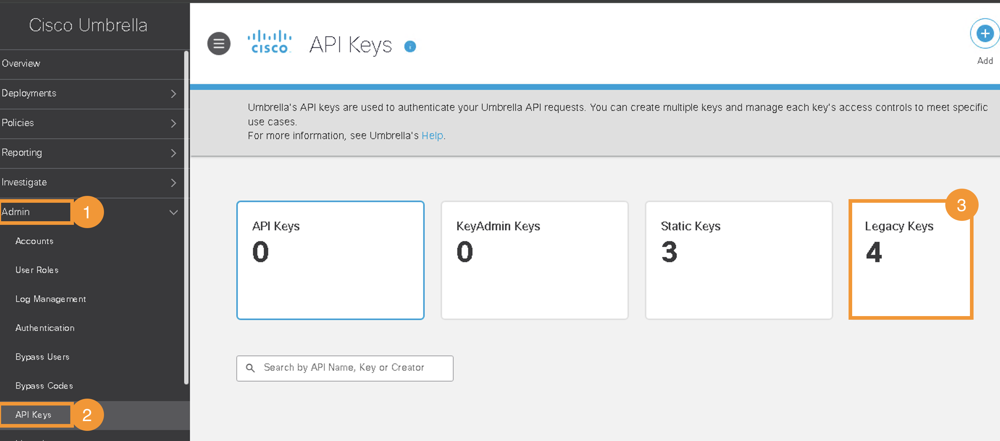

Task 5: Umbrella (SIG) for Site300
In this task we will enable intergration Site 300 with Cisco Umbrella.
Step 1 - Umbrella Configuration
- On the RDP session (jumphost), logon to Umbrella Dashboard by clicking on Google Chrome Browser bookmark named
Umbrella SSO. It will open the Umbrella dashboard and auto-login using single-sign-on.

| Note: |
|---|
| Click through the security warning to ignore the certificate (if prompted). |
- Umbrella organization (Org) is a separate instance of Umbrella and has its own dashboard. An
Org IDis used to identify each organization and for integrating Umbrella with Cisco SD-WAN. ThisOrg IDis a number and part of the Umbrella web URL and must be extracted from the URL. This ID will be required at a later step as part of vManage configurations for Umbrella SIG integration. Once you are logged into the Umbrella dashboard, extractOrg IDfrom the URL in the address bar as per below syntax:
https://dashboard.umbrella.com/o/<Org ID>/#/<page>

-
On Umbrella, navigate to Admin > API Keys
-
Generate API
KeyandSecretby clicking on Legecy Keys. Further, click on Umbrella Management and then click on Generate Token. Then copy bothKeyandSecreton a notepad - this information will be used in next step.


| Note: |
|---|
| You must copy both Key and Secret in a notepad. It is only shown at this stage and not visible afterwards. |
Step 2 - Update SIG Template.
- On vManage, navigate to Configuration > Templates > Feature Templates, and then in the search bar type
sigand find the template with nameVIP23-SIG-Feature-Template. Further, click on three dots (...) at the right side and click Edit as shown in below screenshots:


-
Click on "Click here to create - Cisco SIG Credintial Template"

-
Enter Umbrella
Org ID,KeysandSecretsaved in previous step and click Save.

-
Then click Update at the bottom of the page:

Step 3 - Apply SIG Template
This SIG template in VPN0 will be applied to Site300-cE1 for Umbrella SIG integration i.e. setting up IPSec tunnels with between Site300 and Umbrella cloud.
-
Navigate to Configuration > Templates > Device Templates.

-
Further, for the Site300-cE1 device, click on three dots (...) at the right side and click Edit as shown in below screenshots.

-
Click on the Transport and Management VPN section.

-
Click on Cisco Secure Internet Gateway to add the template. Select
VIP23-SIG-Feature-Templatefrom the drop-down menu.
-
Scroll all the way down to Additional Templates section and ensure Cisco SIG Credentials of
Cisco-Umbrella-GLobal-Credintailsare selected.

-
Click Update
-
Click Next

-
Click Configure Devices

-
Wait till config push is sucessfull
Now the configurations for IPSec tunnels creation between Site-300 cEdge and Umbrella cloud are done.
Step 4 - SIG Tunnels Verificaiton
In this step we will confirm that the tunnels to Umbrella cloud are UP by accessing Umbrella dashboard.
-
If access to Umbrella dashboard is not already open, on the RDP session, launch Google Chrome and click on
Umbrella SSObookmark to open up a session to Umbrella dashboard. -
After successful login to Umbrella Dashboard, navigate to Deployments > Core Identities > Network Tunnels

-
It will take few minutes for tunnels to be Active. The tunnels will remain in
Unestablished Tunnelsstate initially. After few minutes there should be 2Active Tunnelsas shown in below screenshot:
-
Using mRemoteNG application on RDP session, launch console session on ubuntu Site300 VPN10 host (Virtual Machine / VM).
-
Within the console of this Ubuntu VM, launch the Web Browser application and access website
welcome.umbrella.com. This is to verify if Site300 is protected by Umbrella. What message do you see when you try to access this website?

Why did it fail? This is because, the traffic from SD-WAN site is still going out throught normal interface NOT throught SIG tunnels. We have to create a Service Route to redirect traffic from SD-WAN site on Umbrella SIG Tunnels towards Umbrella Cloud - this will be performed in next step.
Step 5 - Redirect Traffic to SIG tunnels
Let's add a Service Route to SIG in order to redirect traffic from VPN 10 to Umbrella cloud.
-
On vManage, navigate to Configuration > Templates > Feature Templates
-
In search bar type
vpn_10_site300_ce1. Click the three dots (...) on the right side of this template, and then click Edit in the dropdown menu as shown in below screenshot:

-
Click Service Route

-
Click New Service Route
-
Add a route to
0.0.0.0/0pointing to SIG. -
Click Add and then Update at the bottom of the page:

-
Click Next and then click Configure Devices
-
Wait till config push is sucessfull

-
Using mRemoteNG application on RDP session (Jumphost), launch console session on ubuntu Site300 VPN10 VM again. Launch Chromium Web browser and check again by browsing to
welcome.umbrella.comURL/website. TheWelcome to Umbrellamessage indicates that the site is now protected by Umbrella - specifically the traffic in VPN-10 of Site-300 is protected by Umbrella.

- On the console session of ubuntu VM Site300 VPN10 (by using mRemoteNG application), verify traffic routing on this Site-300 by running below command:
traceroute 8.8.8.8
From the output of traceroute, what do you notice different to the output in earlier task on this VM/host? (Tip: hop count etc)